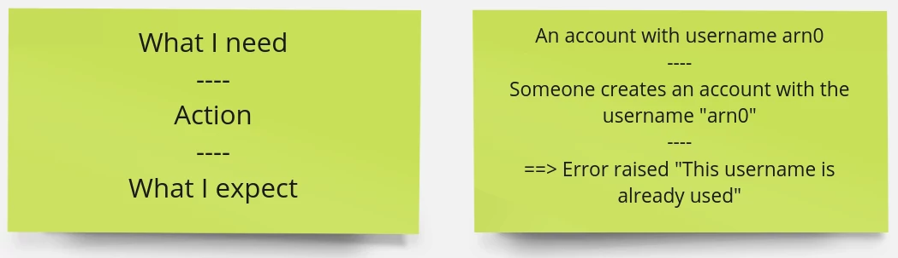
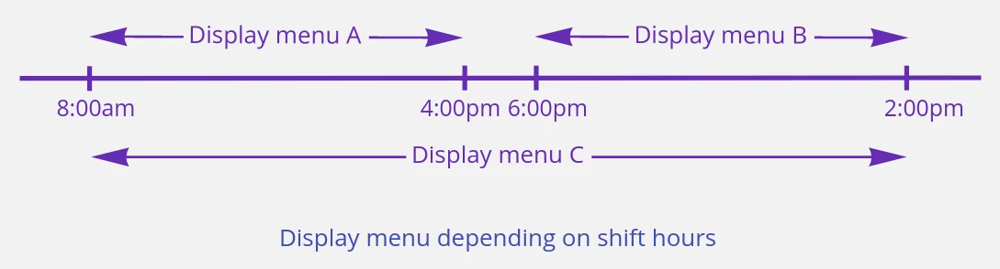
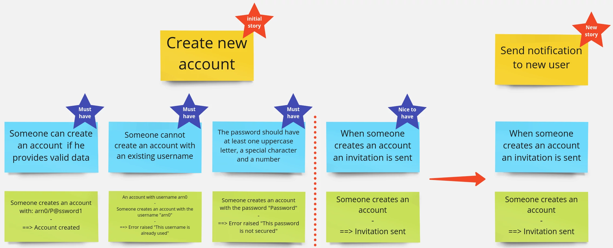

Example mapping is a workshop that gathers tech and non-tech people to ensure everyone has the same understanding of the domain problem. It also helps clarify the acceptance criteria for a given story. Because it’s always better to understand what is expected and raise all bottlenecks before developing a story.
Disclaimer! I won’t explain how to run such a workshop, you can easily find a bunch of articles on the web. You can also have a look at these slides, they come from one of my talks about example mapping if you’re not familiar with it. In this blog article, I want to share with you my experience on Example Mapping and how it helps me to prepare and organize the team’s work.
Caution: A little while ago, I got feedback from Bruno Boucard about using sticky notes. He advised me to use index cards instead of sticky notes. The workshop attendees can put them on a table and easily move them, unlike stick notes. I speak about sticky notes in this blog post because I only practiced this workshop remotely using tools like Miro.
Who will attend the workshop?
The methodology recommends to involve at least the product managers, developers and testers. The goal of example mapping is that the product manager shares the problem with the person(s) who will solve it. I will go further, you can invite anyone who wants to understand what you are doing. It is a good way to share knowledge.
During my last year at Akeneo, I worked on a new product called Shared Catalogs. All my teammates including devs, product manager, and engineering managers were newcomers. Even if they were really well onboarded on Akeneo’s products, they had a micro vision of what Akeneo PIM did, and the software’s functional perimeter was pretty huge. At this time, I was working at Akeneo for 4 years, andI had a good understanding of the product. During the example mapping sessions I shared as much knowledge as possible with my teammates, it helped the team to quickly improve their functional skills.
When do we plan it?
From my experience, a 30-minute slot is a good tradeoff. It’s not too long and you can easily illustrate the main business rules of the story and detect all bottlenecks. With a 30-minute meeting, you’re sure that your teammates will stay focused, especially when you work remotely. Having regular and short workshops is better than doing a big and long one.
Depending on their roles, some team members can be really busy. For instance, I worked with several PMs who were often in meetings and it was really hard to catch them. To be sure that everyone can be available, each team member booked a 30 minutes slot after the daily meeting. Doing an example mapping was not mandatory, we only did the workshop if we needed to prepare stories.
How organize the team
The attendees can have different roles: onek person writes sticky notes, another animates the workshop and the others ask questions and drive the person who writes sticky notes. I think it is important to switch his/her role each session to keep everyone involved during the workshop.
I worked with some product managers and domain experts who wanted to contribute and write sticky notes. It is not a good idea because they should focus on sharing the knowledge and let the rest of the team grasp the business expectations. You won’t help someone if you do his/her job.
How to start
Writing the title of a story on a yellow sticky note is pretty simple but I sometimes had difficulties getting the business rules and the examples listed. Especially, when you are doing this workshop with a team for the first time. I found out that it was easier to sometimes start by writing the example first or sometimes by writing the business rules first.
First option: start by writing the business rules and then write the examples if your team is comfortable with the exercise and your product manager has a clear vision of what is expected.
Second option: start by writing examples and then extract business rules from examples if your team is not comfortable with the workshop or if your product manager needs to explore a topic and he/she waits for your feedback. It will let you and your teammates speak, and understand what is going on. When you have enough examples and your understanding of business is better you can extract the business rules.
Don’t be afraid if it is a bit complicated to be efficient in the beginning. One day, my teammates and I prepared a story about exporting a CSV file, quite simple, right? We only needed to “take data from the DB and build a file” but it wasn’t that simple! We turned this “simple” story into at least 15 stories. We discovered a lot of “hidden” business rules. We thought it was a story but it was an epic…
How to write example
Don’t try to write gherkins scenarios at all costs because it can be time-consuming. The goal of this workshop is to ensure all teammates grasp what the business expects and it is the right time to raise all problems and incomprehension.
The simplest format I used to define the example looked like the Given / When / Then but a really simplified version.

Sometimes it can be more readable to draw something.

Don’t limit yourself, if you prefer another format, use it. The most important thing is that everyone understands what is expected.
Don’t forget red sticky notes
Avoid endless debates! Don’t hesitate to use red sticky notes if your teammates disagree on something. Keep in mind that your product manager can’t answer all questions during the workshops. It’s normal, the product manager is not a super(wo)man! Thus, add a red sticky note and take time to think about it, he/she’ll answer all questions in the next session.
Have small stories
I like to talk with the PM when the story is ready to be developed (when there are no more red stickies and when all teammates are OK with it). I usually challenge him/her to know which business rules are really mandatory and which ones are nice-to-have. It ensures your stories are really small and it eases the prioritization. You can focus on what is really important and keep what is nice-to-have for later.
Tip: If your story has too many business rules, it’s a smell! That means you should split it into small ones. It will be easier to ship several small stories than a big one. If a business rule has too many examples, that’s a smell too. You might have missed some business rules.

I am not a big fan of estimates, it’s a waste of time. We should focus on understanding the problem we want to solve, instead of giving figures that will probably be wrong. Having a really small story will help you to be more predictive. You can count the stories done during a time frame and easily forecast what your team will be able to do during the next iteration.
Final thoughts
The first example mapping workshop can be complex but don’t give up. The more you practice, the more comfortable your team will be with the workshop. Example mapping is a good way to align the team’s understanding with the stakeholders expectations. It will help your team to better collaborate and break all silos between all kinds of positions in your team. Last but not least, it will help you refine your stories and improve your backlog prioritization.
Thanks to my proofreader @LaureBrosseau.